应用访问高可用
Keepalived+Nginx+Tomcat 高可用部署（基于K8s集群）
一、部署架构说明
本部署基于K8s集群（1个Master节点+2个Node节点），实现 Tomcat 容器化部署、Nginx 7层负载均衡、Keepalived 双机热备高可用，整体架构如下：
- K8s集群：Master（192.168.126.132）、Node1（192.168.126.133，Keepalived MASTER）、Node2（192.168.126.134，Keepalived BACKUP）
- Tomcat：2个Pod分别部署在Node1、Node2，通过NodePort Service暴露端口（30080）
- Nginx：Node1、Node2各部署1台，反向代理后端Tomcat Service
- Keepalived：双机热备，虚拟IP（VIP：192.168.126.200），实现故障自动漂移
- 访问链路：外部用户 → VIP（Keepalived） → Nginx负载均衡 → Tomcat NodePort → Tomcat Pod
二、前置准备（必做）
确保K8s集群正常运行，所有节点状态为Ready，执行以下命令验证（在Master节点操作）：
# 查看K8s节点状态
kubectl get nodes✅ 验证结果：输出Master、Node1、Node2节点，状态均为Ready，版本为v1.23.0，即为集群正常。
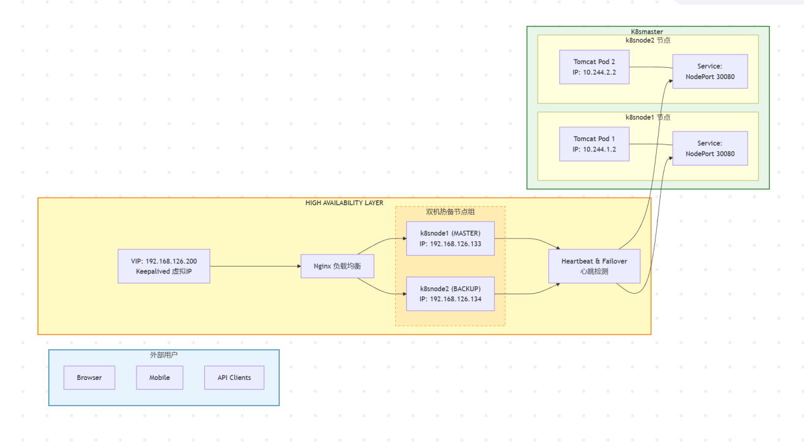
三、部署Tomcat Deployment（Master节点操作）
3.1 创建Tomcat Deployment配置文件
# 编辑配置文件
vim tomcat-deploy.yaml配置内容如下（固定格式，无需修改）：
apiVersion: apps/v1
kind: Deployment
metadata:
name: tomcat-deploy
spec:
replicas: 2 # 部署2个Pod，分别分布在2个Node节点
selector:
matchLabels:
app: tomcat
template:
metadata:
labels:
app: tomcat
spec:
containers:
- name: tomcat
image: tomcat:8.5 # 采用Tomcat 8.5镜像
ports:
- containerPort: 8080 # Tomcat默认端口3.2 部署Tomcat并验证
# 执行部署
kubectl apply -f tomcat-deploy.yaml
# 查看Pod状态（默认命名空间）
kubectl get pods -n default
# 查看Pod分布情况（指定-o wide参数）
kubectl get pods -n default -o wide✅ 验证结果：2个Tomcat Pod均为Running状态，且分别分布在k8snode1（IP：10.244.1.2）、k8snode2（IP：10.244.2.2），即为部署成功。
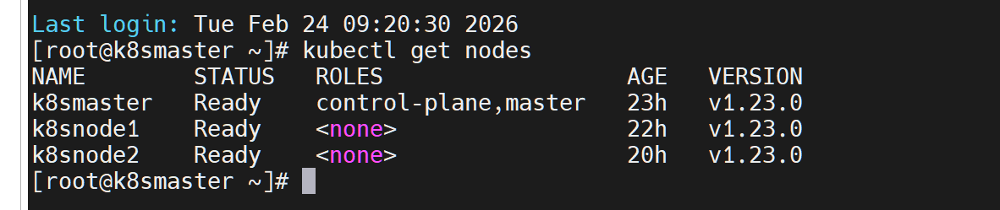
3.3 配置Tomcat首页（区分两个节点）
分别进入两个Tomcat Pod，写入不同首页内容，便于后续验证负载均衡效果：
# 进入Node1上的Tomcat Pod（替换Pod名称为实际名称）
kubectl exec -it tomcat-deploy-7996d97f68-182p4 -- /bin/bash
# 写入首页内容
echo "<html><body><h1>Hello from $(hostname)! this is k8snode1 ip 10.244.1.2</h1></body></html>" > /usr/local/tomcat/webapps/ROOT/index.html
# 退出Pod
exit
# 进入Node2上的Tomcat Pod（替换Pod名称为实际名称）
kubectl exec -it tomcat-deploy-7996d97f68-zpxCc -- /bin/bash
# 写入首页内容
echo "<html><body><h1>Hello from $(hostname)! this is k8snode2 ip 10.244.2.2</h1></body></html>" > /usr/local/tomcat/webapps/ROOT/index.html
# 退出Pod
exit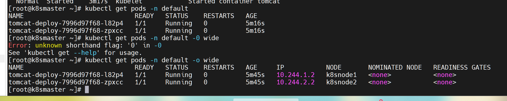
四、创建NodePort Service（Master节点操作）
4.1 创建Service配置文件
# 编辑配置文件
vim tomcat-svc.yaml配置内容如下（固定格式，无需修改）：
apiVersion: v1
kind: Service
metadata:
name: tomcat-service
spec:
type: NodePort # 采用NodePort类型，暴露集群外部访问
selector:
app: tomcat # 关联Tomcat Pod的标签
ports:
- port: 8080 # Service端口
targetPort: 8080 # 映射到Tomcat Pod的端口
nodePort: 30080 # 集群外部访问端口（固定30080）4.2 部署Service并验证
# 执行部署
kubectl apply -f tomcat-svc.yaml
# 查看Service状态
kubectl get svc✅ 验证结果：tomcat-service状态为NodePort，PORT(S)显示8080:30080/TCP，即为部署成功。
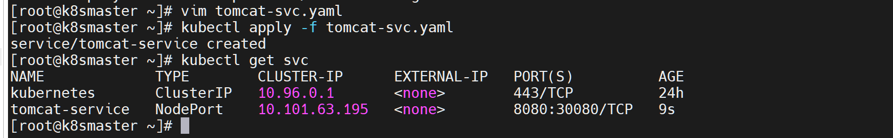
4.3 测试Tomcat访问
# 访问Node1上的Tomcat
curl 192.168.126.133:30080
# 访问Node2上的Tomcat
curl 192.168.126.134:30080✅ 验证结果：均能返回对应Node节点的Tomcat首页内容，即为访问成功。
五、在Node1、Node2安装Nginx（双节点均操作）
# 安装Nginx
yum install -y nginx
# 设置Nginx开机自启
systemctl enable nginx
# 启动Nginx服务
systemctl start nginx
# 查看Nginx状态（可选）
systemctl status nginx✅ 验证结果：Nginx状态为active (running)，即为安装启动成功。
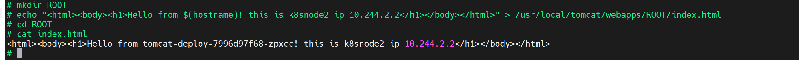
访问IP验证
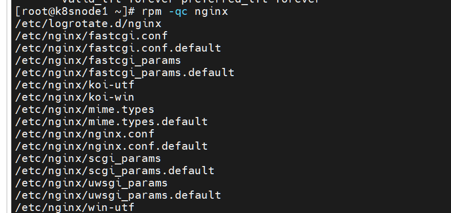
六、配置Nginx反向代理（Node1、Node2均操作）
6.1 编辑Nginx主配置文件
# 编辑Nginx配置文件
vim /etc/nginx/nginx.conf6.2 添加反向代理配置
在 http 块内添加以下配置（替换默认 server 块，或新增配置）：
# 配置后端Tomcat节点（Node1、Node2的NodePort地址）
upstream k8s_backend {
server 192.168.126.133:30080; # Node1的Tomcat访问地址
server 192.168.126.134:30080; # Node2的Tomcat访问地址
}
# 配置Nginx监听80端口，反向代理到后端
server {
listen 80;
listen [::]:80;
location / {
proxy_pass http://k8s_backend; # 转发到后端Tomcat集群
proxy_set_header Host $host;
proxy_set_header X-Real-IP $remote_addr;
proxy_set_header X-Forwarded-For $proxy_add_x_forwarded_for;
proxy_connect_timeout 60s;
proxy_read_timeout 120s;
}
}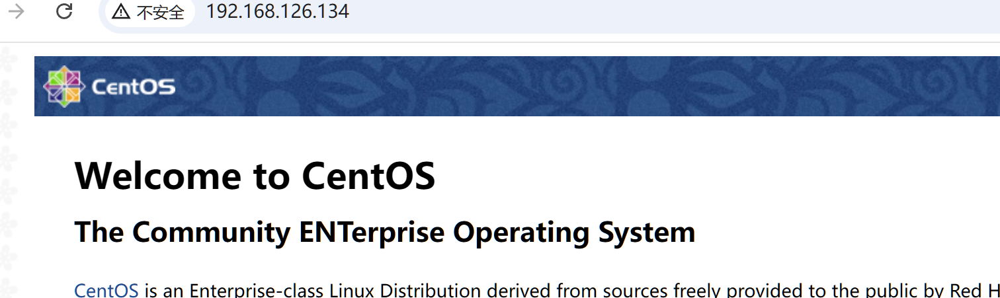
6.3 验证配置并重启Nginx
# 验证Nginx配置是否正确
nginx -t
# 重启Nginx使配置生效
systemctl restart nginx✅ 验证结果：nginx -t输出“test is successful”，重启后Nginx状态为active (running)，即为配置成功。
6.4 测试Nginx反向代理
# 访问Node1的Nginx（80端口）
curl 192.168.126.133
# 访问Node2的Nginx（80端口）
curl 192.168.126.134✅ 验证结果：两次访问分别返回两个Tomcat节点的首页内容，说明Nginx负载均衡生效。
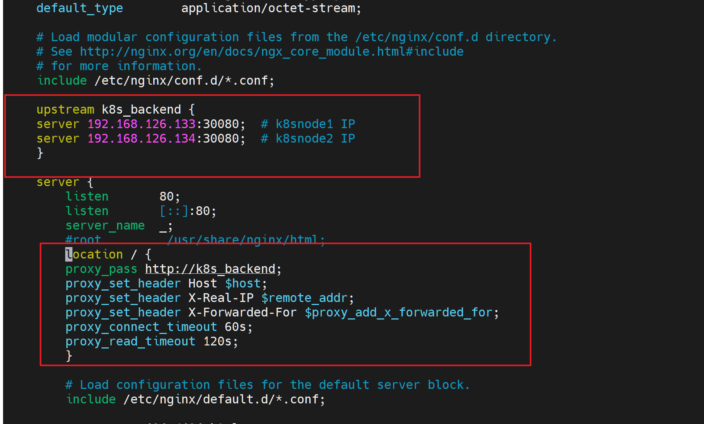
七、安装Keepalived（Node1、Node2均操作）
# 安装Keepalived
yum install -y keepalived
# 设置Keepalived开机自启
systemctl enable keepalived --now
# 查看Keepalived状态（可选）
systemctl status keepalived✅ 验证结果：Keepalived状态为active (running)，即为安装启动成功。
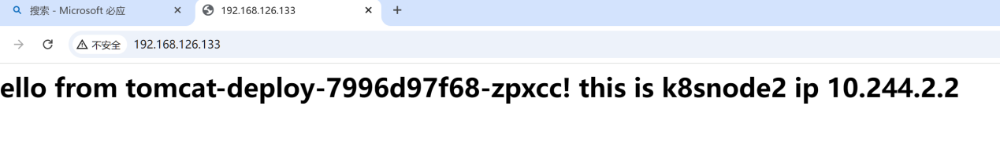
八、配置Keepalived（双节点分别配置）
8.1 通用配置：创建Nginx健康检查脚本（Node1、Node2均操作）
创建脚本用于检查Nginx状态，故障时自动释放VIP，防止脑裂：
# 编辑健康检查脚本
vim /etc/keepalived/check_nginx.sh脚本内容如下（固定格式，无需修改）：
#!/bin/bash
# 检查Nginx进程是否存在
if ! killall -0 nginx; then
systemctl stop keepalived # 停止Keepalived，主动释放VIP
exit 1
fi
# 检查Nginx服务是否能正常响应
if ! curl -s --head http://localhost 2>&1 | grep -q "HTTP/1.1 200 OK"; then
systemctl stop keepalived
exit 1
fi
exit 0给脚本添加执行权限：
chmod +x /etc/keepalived/check_nginx.sh8.2 Node1（主节点MASTER）配置
# 编辑Keepalived配置文件
vim /etc/keepalived/keepalived.conf配置内容如下（核心参数已标注，无需修改）：
# 关联Nginx健康检查脚本
vrrp_script chk_nginx {
script "/etc/keepalived/check_nginx.sh" # 脚本路径
interval 2 # 每2秒检查一次
weight -5 # 检查失败时降低5点优先级
fall 2 # 连续2次失败判定为异常
rise 1 # 1次成功即恢复健康状态
}
# 虚拟路由实例配置
vrrp_instance VI_1 {
state MASTER # 角色：主节点
interface ens33 # 绑定的物理网卡（需与实际一致）
virtual_router_id 51 # 虚拟路由器ID（主备必须相同，1-255）
priority 100 # 优先级（主节点高于备节点，1-255）
advert_int 1 # VRRP通告间隔（1秒）
# 认证配置（主备必须相同）
authentication {
auth_type PASS # 认证类型：密码认证
auth_pass 1111 # 认证密码（1-8位）
}
# 虚拟IP（VIP）配置
virtual_ipaddress {
192.168.126.200/24 # 虚拟IP地址，与集群同网段
}
# 关联健康检查脚本
track_script {
chk_nginx
}
}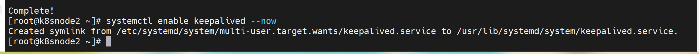
8.3 Node2（备节点BACKUP）配置
# 编辑Keepalived配置文件
vim /etc/keepalived/keepalived.conf配置内容如下（仅修改state和priority，其余与主节点一致）：
# 关联Nginx健康检查脚本（与主节点一致）
vrrp_script chk_nginx {
script "/etc/keepalived/check_nginx.sh"
interval 2
weight -5
fall 2
rise 1
}
# 虚拟路由实例配置（仅修改角色和优先级）
vrrp_instance VI_1 {
state BACKUP # 角色：备节点
interface ens33 # 绑定的物理网卡（与主节点一致）
virtual_router_id 51 # 与主节点相同
priority 90 # 优先级低于主节点（90<100）
advert_int 1 # 与主节点相同
# 认证配置（与主节点相同）
authentication {
auth_type PASS
auth_pass 1111
}
# 虚拟IP（与主节点相同）
virtual_ipaddress {
192.168.126.200/24
}
# 关联健康检查脚本（与主节点一致）
track_script {
chk_nginx
}
}8.4 配置权限并重启Keepalived（Node1、Node2均操作）
创建系统用户，避免重启服务时提示权限不足：
# 创建系统用户（无登录权限）
useradd -r -s /sbin/nologin keepalived_script
# 重新加载系统守护进程
systemctl daemon-reload
# 重启Keepalived并查看状态
systemctl restart keepalived && systemctl status keepalived✅ 验证结果：Keepalived状态为active (running)，无报错，即为配置成功。
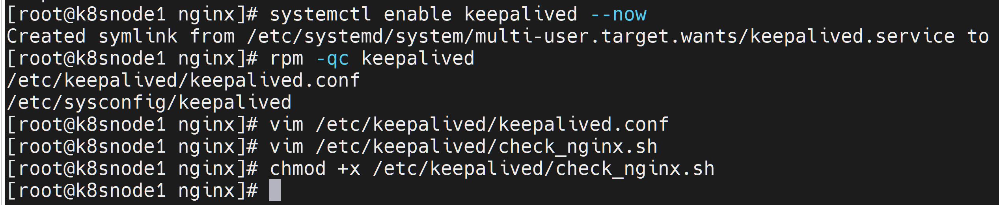
九、验证VIP漂移与高可用
9.1 查看VIP初始状态（Node1执行）
# 查看网卡IP信息
ip addr✅ 验证结果：ens33网卡除了自身IP（192.168.126.133），还存在VIP（192.168.126.200），说明主节点正常持有VIP。
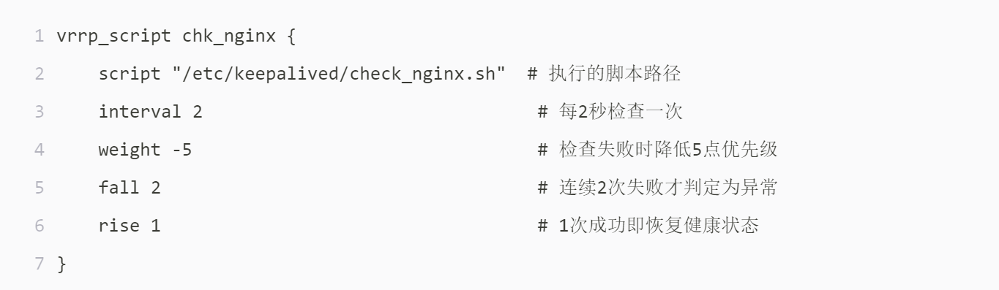
9.2 测试VIP访问（任意节点执行）
# 访问VIP（80端口，通过Nginx负载均衡）
curl 192.168.126.200✅ 验证结果：多次执行，交替返回两个Tomcat节点的首页内容，说明VIP访问正常，Nginx负载均衡生效。
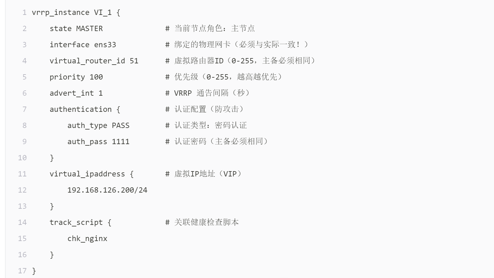
9.3 模拟主节点故障，测试VIP漂移（Node1执行）
# 停止Node1的Keepalived，模拟主节点故障
systemctl stop keepalived
# 查看Node1的网卡IP（确认VIP已释放）
ip addr | grep ens33✅ 验证结果：Node1的ens33网卡仅保留自身IP，VIP已消失。
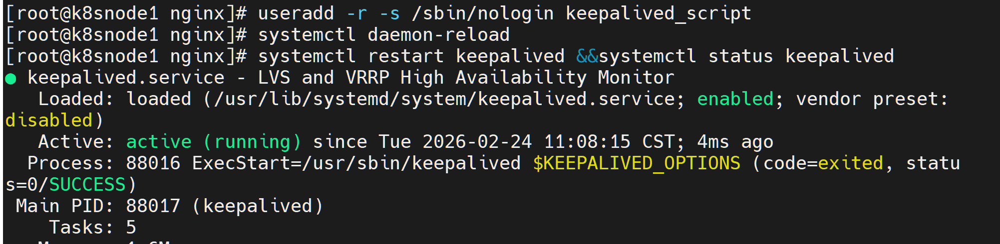
9.4 查看备节点VIP接管情况（Node2执行）
# 查看Node2的网卡IP
ip addr✅ 验证结果：Node2的ens33网卡新增VIP（192.168.126.200），说明VIP成功漂移到备节点。
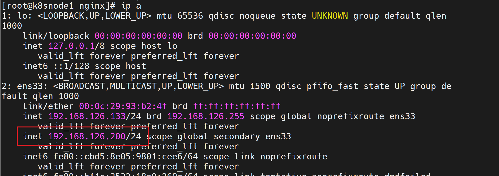
9.5 验证故障后VIP访问（任意节点执行）
# 再次访问VIP
curl 192.168.126.200✅ 验证结果：仍能正常访问，返回Tomcat首页内容，说明高可用部署成功。
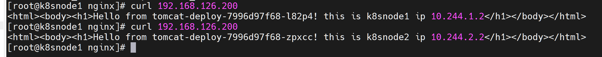
十、部署总结
本次部署完成以下功能，均验证通过：
- ✅ K8s Tomcat Deployment部署（2个Pod，跨节点分布）
- ✅ NodePort Service暴露（30080端口，集群外部可访问）
- ✅ Nginx 7层负载均衡（反向代理Tomcat集群）
- ✅ Keepalived双机热备（VIP：192.168.126.200）
- ✅ VIP故障自动漂移（主节点故障，备节点接管）
- ✅ Nginx健康检查（防止脑裂，故障自动释放VIP）
本阶段成果
完成 Keepalived、Nginx 与 Tomcat 的访问链路配置，实现应用访问入口高可用验证，并打通从集群服务到外部访问的完整路径。